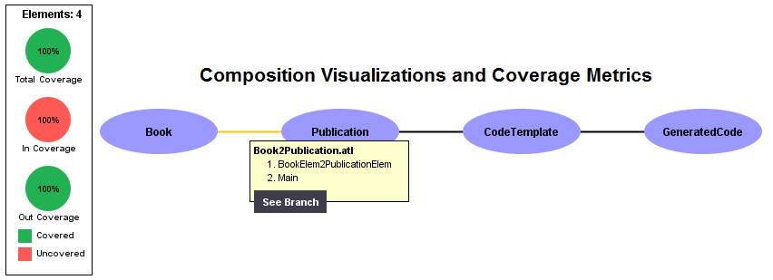
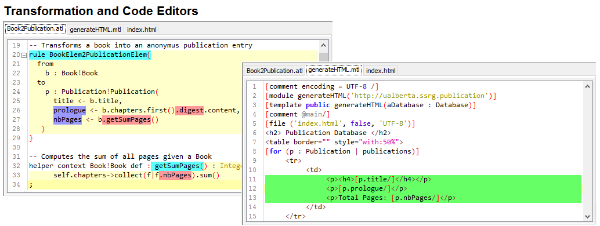

Welcome to ChainTracker
ChainTracker is a traceability collection and analysis environment that enables developers to explore the static and dynamic aspects of model-to-model, and model-to-text transformations. ChainTracker reasons about the symbolic execution of model transformations when used in isolation, or when composed in model-transformation chains. The analysis environment provides interactive visualizations and smart transformation editors that helps developers to navigate its architecture and execution mechanics.
ChainTracker has been developed by Victor Guana in the University of Alberta at the Service Systems Research Group, and it aims at making model-driven software development more accesible to the general software engineering community. ChainTracker helps developers debugging, testing and maintaining model transformations by providing an integrated development environment that infers, quantifies, and visualizes their execution semantics.
ChainTracker Vision
Model transformations have emerged as an effective mechanism to achieve complex software engineering tasks in a systematic manner. Furthermore, model-to-model and model-to-text transformations are effectively used to for code analysis and verification, database schema translation, and the construction of code generators. However, due to the complexity of model-to-model and model-to-text transformation scripts, which is exacerbated as they are composed in complex transformation chains, developers face technical and cognitive challenges when architecting, implementing, and maintaining model-based software engineering tools. ChainTracker aims at making model transformations part of every software developer's toolbox.
ChainTracker Features
ChainTracker provides two different types of visualizations for model transformations. The overview visualization and the branch visualization enable developers to abstract the complexity of individual and composed transformation scripts into a single picture that summarizes its overall architecture from a dynamic and static perspective.
The branch visualization follows a graphical notation inspired by the parallel-coordinates visualizations for hyper-dimensional data. It portays the symbolic relationships that individual binding statements hold between metamodel elements and its properties, textual templates, and generated text files.

ChainTracker allows developers to use code visualizations to understand the static and dynamic insights of a transformation ecosystem. It helps developers to project information they have discovered through their interaction with visualization onto textual editors.
A key use for ChainTracker's visualizations is to guide developers to the right code to look at, instead of being an aid to understanding on their own.

The context information tables present opportunistic information about details not available in the visualization when developers click on its different elements. Developers can select a metamodel element in the visualization, and as a result the three context tables display information about the names and type of its properties, related upstream bindings, and downstream bindings.
The Chaintracker analysis environment helps developers to assess the impact metamodel and platform evolution, to debug transformations during their development process, identify transformation refactoring oportunities to improve its qualities, and to perform coverage analysis and transformation testing.
The Faces Behind ChainTracker
Victor Guana Ph.D. Candidate and Project Lead, Eleni Stroulia Supervisor, Kelsey Gaboriau Intern, Vina Nguyen Intern

This project has been funded with support of the Natural Sciences and Engineering Research Council of Canada (NSERC), The Graphics, Animation and New Media Network of Centres of Excellence (GRAND), and The Killam Laurates
Key Publications
- Guana, V., Stroulia, E. How Do Developers Solve Software-engineering Tasks on Model-based Code Generators? An Empirical Study Design. First International Workshop on Human Factors in Modeling (HuFaMo’15) Sep. 28th Ottawa, Canada.
- Guana, V., Stroulia, E. Reflecting on Model-based Code Generators Using Traceability Information. 18th International Conference on Model Driven Engineering Languages and Systems (MODELS15) Tool Demo Paper. Sep. 27th to Oct 2nd. Ottawa, Canada.
- Guana, V., Gaboriau, K. Stroulia, E. ChainTracker: Towards a Comprehensive Tool for Building Code-generation Environments. 30th IEEE International Conference on Software Maintenance and Evolution (ICSM14). Victoria, BC. September 28th to October 3rd.
- Guana, V., Stroulia, E.: ChainTracker, a Model-transformation Trace Analysis Tool for Code-generation Environments. 7th International Conference on Model Transformation (ICMT14). July 21-25. 2014. York, UK.
- Guana, V. Stroulia, E. Backward Propagation of Code Refinements on Transformational Code Generation Environments. TEFSE'13 - The 7th International Workshop on Traceability in Emerging Forms of Software Engineering. San Francisco, California. USA.
- Guana, V. Supporting Maintenance Tasks on Transformational Code Generation Environments. 35th International Conference on Software Engineering (ICSE-DS 2013). San Francisco, California. USA.